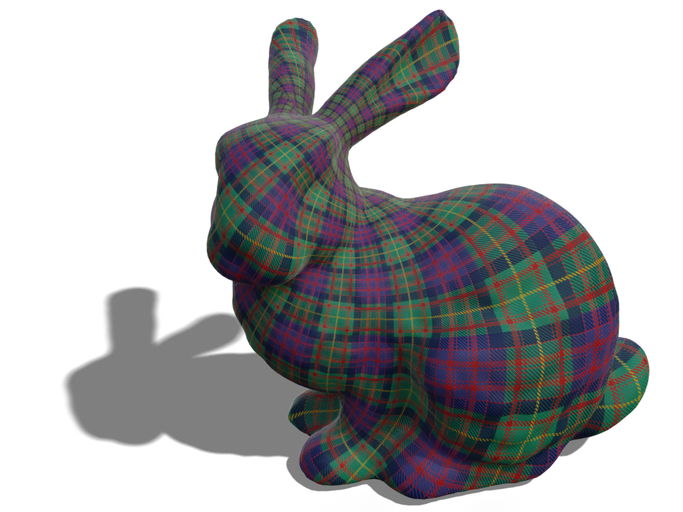
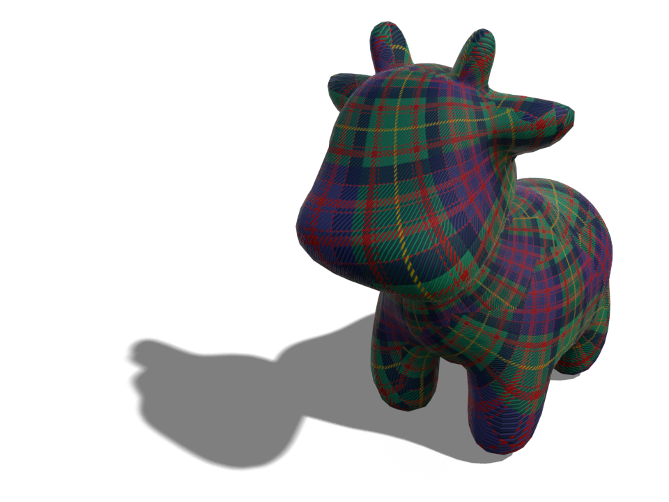
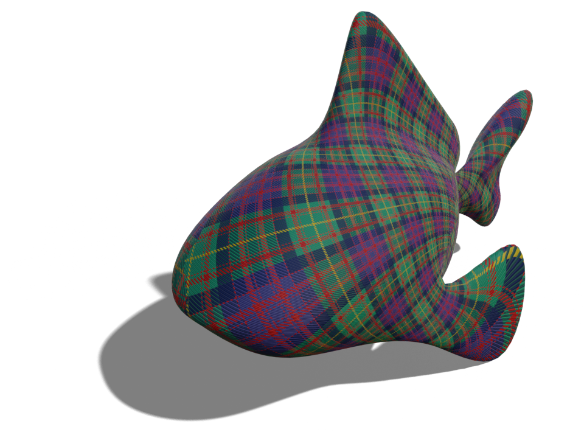
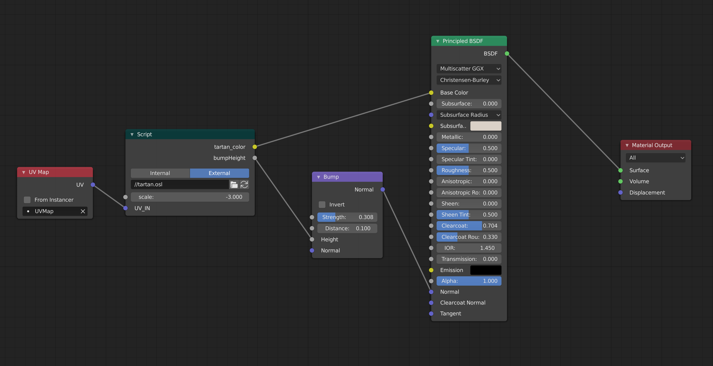
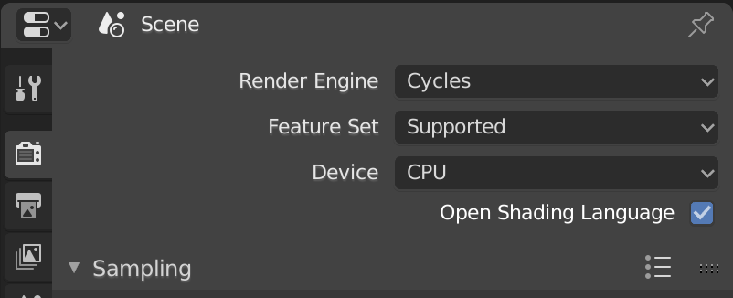

Tartan Shader



Blender
You can find an .osl file for the shader here. You can use this file in Blender's node editor with a script node. Unfortunately, Eevee doesn't support custom shaders yet, so you have to render with Cycles to use this shader.
In order to render with a custom shader, you have to check the Open Shading Language option in the Render menu.
